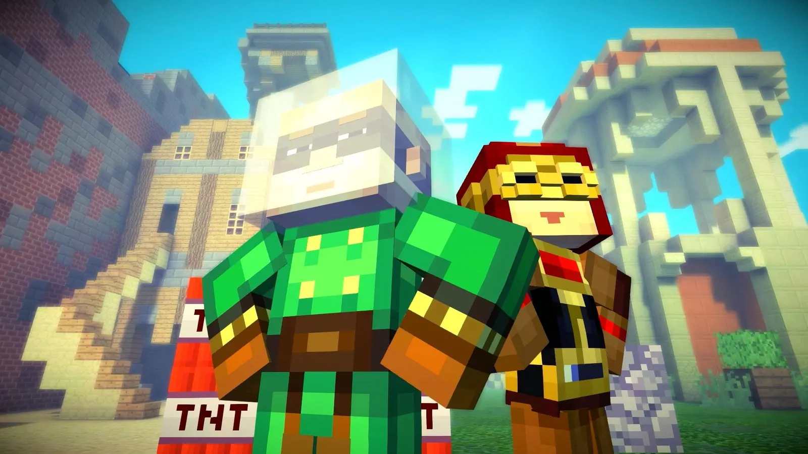

Question 6
Which quality best describes your leadership style?
Quietly impactful with a surprise factor
Steady, nurturing, and supportive
Bold, optimistic, and opportunity-driven
Innovative, fun-loving, and full of surprises
Back
Next